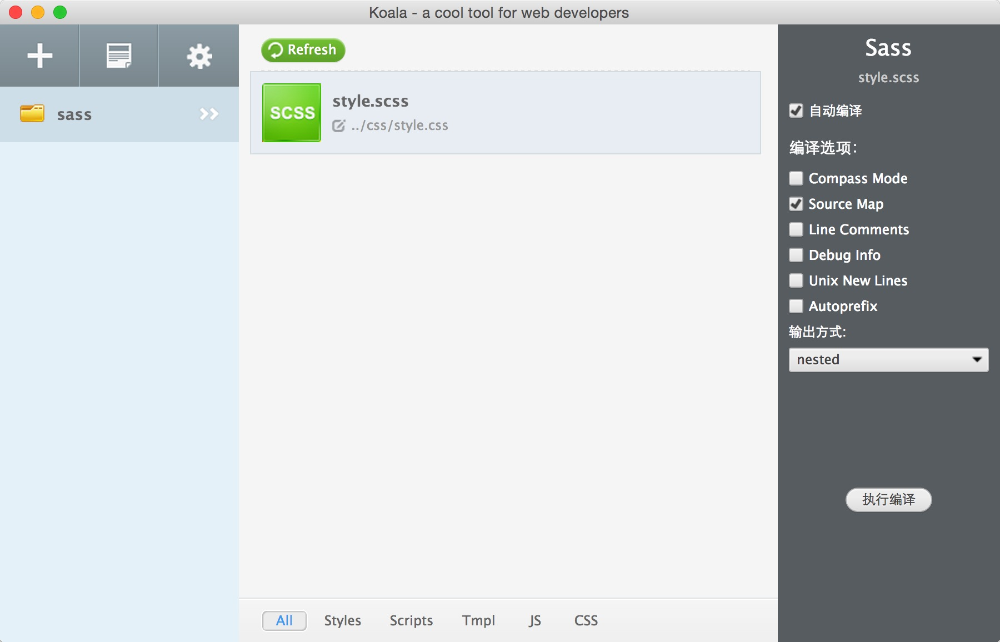

1，根据官方指引，构建项目框架
安装vue
npm install vue@2.1.6
全局安装 vue-cli
npm install --global vue-cli
创建一个基于 webpack 模板的新项目my-project
vue init webpack my-project
进入项目目录
cd my-project
安装依赖，走你
npm install
运行项目
npm run dev
2，使用webpack+ sass 来写css
less是一门css预处理语言，它是拓展了css，增加了变量，Mixin等等。使用sass需要安装sass服务，sass-loader用来打包时用，
想要将sass正确解析成css当然还需要style-loader和css-loader。loader是webpack重要的功能之一，通过使用不同的loader，
webpack可以使用外部脚本或工具处理不同格式类型的文件，如通过sass-loader处".sass"文件。
首先安装：
npm install sass --save-devnpm install style-loader css-loader sass-loader --save-dev
3，LESS/Sass 编译工具Koala介绍
koala是一个国产免费前端预处理器语言图形编译工具，支持Less、Sass、Compass、CoffeeScript，帮助web开发者更高效地使用它们进行开发。跨平台运行，完美兼容windows、linux、mac。

转载：https://www.jianshu.com/p/d87d7140944e/ vue入门 | 使用vue.js2.0 + ElementUI开发后台管理系统详细教程
https://www.cnblogs.com/chen-cong/p/8323958.html webpack---less+热更新 使用